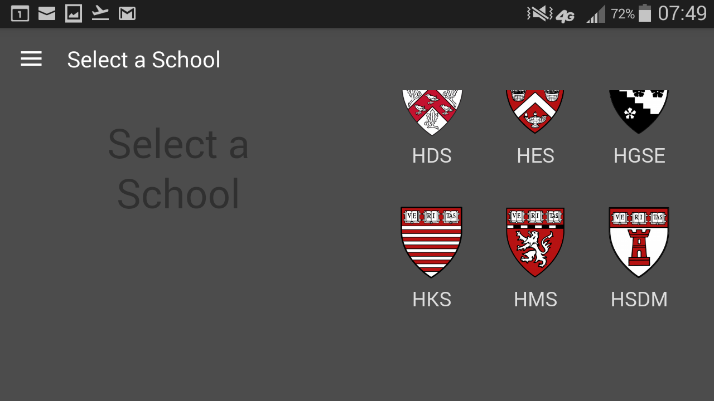

This release of Thrive@Harvard has been reviewed to address Harvard branding, to employ consistent and familiar conventions (such as buttons, breadcrumbs, etc.) and to offer an efficient user experience an intuitive interface.
A few of the following recommendations may have already be addressed by the time this document was published.
The images of the proposed recommendations are not meant to represent specific visual specifications; they are just depictions of suggested alternatives.
Reference: August 19 2016 release
The user experience when downloading and opening this mobile app is quite usable, although branding and consistency of interface conventions shall be addressed.
Branding, clear information, recognizable and consistent navigation ensure an intuitive and unambiguous user experience.
Without compromising the limited available space of mobile interfaces, any opportunity to introduce the Harvard branding and color palette should be considered to allow consistency with the Harvard guidelines.
As defined in the Harvard color guidelines, a background color such as 1E1E1E would be a more appropriate backdrop for the Harvard Shield.
Current Google Play Thumbnail.
Proposed GooglePlay thumbnail with Harvard shield and color palette.
Harvard branding (shield and color palette) could be used throughout the interface.
Current interface.
Proposed interface with Harvard shield and Harvard color palette on upper and lover navigation.
Just a few concise paragraphs could provide the user unfamiliar with this product the needed context.
The download site doesn’t provide sufficient information that describes the function of this product. Provide clear context and a call to action to the user, such as “Use this app to help you getting around the campus, to catch up with news and also to get urgent or general help.”
The home page also doesn’t provide sufficient information that describes this product. The label “Heath & Wellness” implies attributes to good health, although none of the links on the right hand side seems to relate to such topic. Provide clear context and a call to action to the user, such as “Use this app to help you getting around the campus, to catch up with news and also to get urgent or general help.”
On the home page, the text label “HES Health & Wellness" is not readable because of the low contrast because of the light background. Allow for a visual treatment that doesn’t compromise the readability of the information, regardless of any background.
On the home page, the date information “Welcome [date]” has the same visual treatment of the buttons below. If this s not meant to be a button, it should look like a label, such as the “Heath & Wellness” title below.
Example of the home page with information about the product and a clear distinction between labels and buttons.
Consistency of navigation components and the clarity of their purpose avoid ambiguities and confusion.
The “TOP OF PAGE” anchor link visible in the portrait view
The “TOP OF PAGE” anchor link is not available on landscape view.
When on the home page from the startup screen, the home button is not highlighted, nor is active, like all the others; it’s disorienting to the user to understand which page this is.
Once to another section, like “Who to call” and than back to the previous page, like “Home” via the phone back button, on the home page the Who to call“ button is still highlighted.
Once on “Map”, going back to the home page is not possible via the “hamburger” icon on the upper left hand corner. Here all the bottom navigation icons are listed but “Home.” Provide navigation consistently at any opportunity.
When in a landscape orientation, the area containing the scrolling content of the school shields is not defined. It is not possible to distinguish where to interact when to either refresh the content or scroll the area with the shields
Upon trying to scroll the area with the shields, and mistakenly interacting outside of it, the content of this interface is refershed (see spinning icon.)
Example of the school selection page with clearly defined buttons.
Example of clearly defined content areas.
Outlines and scrollling user interface clearly defines static from dynamic areas of content.